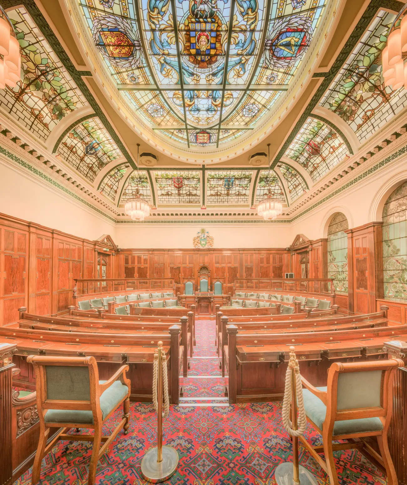

Specialists in how councils decide.
Qualigraf is one platform for decision making, built by our own developers in Dordrecht and run by teams in the Netherlands, France, Canada and the UK. Our UK team brings decades of Democratic Services experience.

Clients across Europe.
French local authorities connected to our services.
Four country teams, one shared platform.
The year our Dutch and French founders started working together.
Two companies, one platform, four countries.
DocWolves in Dordrecht and Qualigraf in France worked together on paperless meetings, council information, file flow and digital voting for years before they merged.
- 2011
Working together
DocWolves and Qualigraf start their close collaboration.
- 2023
Qualigraf Groupe
The two merge into Qualigraf Groupe B.V., with Rens Groeneveld as CEO.
- 2025
Qualigraf UK
Qualigraf UK is set up, with its office in Stoke-on-Trent.
- 2026
A new Group CEO
Steven Garratt, formerly of Civica Modern.Gov, is appointed Group CEO. Rens stays on the board as co owner.
- Now
First UK councils
Two UK councils are implementing Qualigraf.
Built once in Dordrecht, set up for each country's rules.
Our own development team builds and maintains one platform for all four country teams. Each country gets its local regulation, and every country gets what the others learn.
We are not a loose collection of products, but one integrated specialist solution for decision-making.Rens Groeneveld, co founder
Who you'll deal with.
Our UK team brings around 40 years of work inside Democratic Services across several authorities, and more than 20 years of supporting committee management systems as a supplier.

Steven Garratt
Group CEOSpent many years leading Civica Modern.Gov in the UK before joining Qualigraf, and was appointed Group CEO of Qualigraf Groupe in 2026.
At Civica I saw first-hand what it takes to make digital decision-making work at scale. Qualigraf now offers exactly that.

Stuart Benson
Director of Sales and Customer SuccessYour first call for a walkthrough, an AI Minutes trial or a question about moving systems.
At Qualigraf UK, we are taking a different approach focused on better governance, better decision-making, and better support.
Silver sponsor of ADSO. We support the Association of Democratic Services Officers, the professional body for the people our software is built for.
Our ADSO pageIf people can't follow how decisions are reached, trust goes.
Precisely in turbulent times, the importance of transparent, verifiable decision-making cannot be overstated. If citizens can no longer follow how decisions are reached, space opens up for distrust, disinformation and undue influence from outside.Steven Garratt, Group CEO
Qualigraf UK
53 Chapel Street, Mow Cop, Stoke-on-Trent ST7 4NS
+44 7741 080343 · info@qualigraf.com
Qualigraf Groupe B.V.
Draai 9, 3311 JJ Dordrecht, the Netherlands
Our development team and group office
Bring your hardest meeting. We'll run it on Qualigraf.
A walkthrough built around your own committee cycle, your deadlines, your approval routes and your Members.